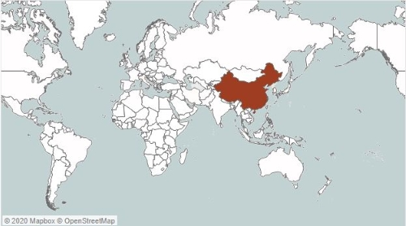

Tableau
Covid-19: Overview
Covid-19: Overview
- Technical Mentions:
- Since March 24, JHU stopped providing data on recovered cases due to lack of confidence in the data. Therefore, the negative values in the ‘people_positive_new_cases_count’ Column for Confirmed Case Type representing recovered cases, should be excluded from all calculations. So, to maintain consistency, a calculated field of ‘Confirmed’ was used instead of ‘people_positive_new_cases_count’ directly. Similar for death count, a calculated field of ‘Deaths’ was used instead of using ‘people_death_new_cases_count’ directly.
- The use of Parameter and a calculated dimension was used to show distribution map of the world for ‘Confirmed Cases’, ‘Death Cases’ and ‘Fatality Rates (%)’.(maps shown respectively)
- The use of in-built function of Index() to calculate Top-10 nations.(shown in the pictures below)
- Covid19 is the abbreviation of Corona Virus Disease 2019.
- Let’s take a peek into the data!
- Note:The time duration of the data is from December 31, 2019 to August 31, 2020.
- Where did the disease origin and what was the spreading pattern across the globe?
| January | Top-10 |
|---|---|
 |
|
| February | Top-10 |
|  | |
| March | Top-10 |
| April | Top-10 |
| May | Top-10 |
| June | Top-10 |
| July | Top-10 |
| August | Top-10 |
- It was from last week of February to mid-March, when the counts increased in countries like United States, Italy, Spain, Germany, other than from the country of origin, China.
-
- Note: In the above graph, the orange color is denoting confirmed cases and the blue color is denoting the death count across the globe.
- As shown by the orange color in the above graph, the first major peak in ‘New Positive Cases per Day’ is during first week of April of the year. This implies the major spread of the disease reported during this time. Post this time, the change in reported confirmed cases has been approximately 80000 cases per day, which can be well concluded by the linear slope of 81000 in ‘Total Number of Cases’ graph.
- The death count has been 5300 cases per day, which cumulates to 857379 cases by August 31, 2020.
- The distribution map of the world for the death counts is shown below, in which United States has the maximum count of 191,573 cases.
-

- The next parameter of discussion is the ratio of number of deaths for every 100 people reported with Covid-19. It is termed as fatality rate. The distribution map for fatality is as shown below. It pictures major number of countries in a shade of green, showing the uniform effect of the pandemic without any geographical differentiation. Moreover, developed countries like France, United Kingdom, Italy, Netherlands, were primely affected with fatality rates in double digits.
-
- The fatality rate of Covid-19 is about 3.38% globally, but it has not been constant through the duration. The graph below shows that it peaked to maximum of 7.31% on April 30, 2020. During mid-April, the rate remained peaked at about 7.31%. It eventually dropped to 3.38% by August 31,2020.
- On selecting a country, the overall effect of pandemic can be studied.
- INDIA
- The ‘Total Number of Cases’ graph shows an exponential increase in the count, which can be explained by the linear increase in the ‘New Positive/Death Cases per Day’ graph.
- Confirmed case of Covid-19 in India was first reported on February 1, 2020. The major outbreak was reported on April 2,2020 with 568 cases, and it has been rising since then.
- The first death due to the pandemic in India was on March 13,2020, and increased to 64,469 cases as of August 31, 2020. The Fatality rate peaked at 3.43% on May 6,2020 and then decreased to 1.78%.
- It can also be noted one hovering over the country that the reported cases of 3,621,245 constitutes 14.26% of the world count, whereas 64,469 death cases constitute 7.52% of the total deaths.
- Link to the dashbroad: Tableau Covid-19 Dashbroad